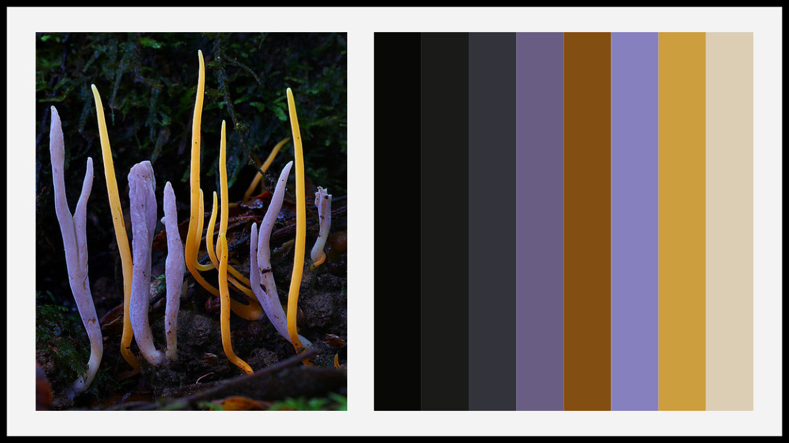

ClipKIT
 Since the early 1990's, there has been one predominant guiding light for multiple sequence alignment trimming - the removal of phylogenetically uncertain or highly divergent sites; however, the efficacy of this approach has been called into question. ClipKIT implements an alternative strategy wherein sites with phylogenetic certainty are retained and others are removed. Our benchmarking analyses show that ClipKIT is a reliable and top performing software.
Since the early 1990's, there has been one predominant guiding light for multiple sequence alignment trimming - the removal of phylogenetically uncertain or highly divergent sites; however, the efficacy of this approach has been called into question. ClipKIT implements an alternative strategy wherein sites with phylogenetic certainty are retained and others are removed. Our benchmarking analyses show that ClipKIT is a reliable and top performing software.
Documentation
treehouse
 Sometimes phylogenies are so large it is challenging to determine the relationships among a subset of taxa. To remedy this issue, treehouse, a user friendly shiny app, allows users to obtain subtrees from larger phylogenies. To obtain subtrees, the user must upload a list of tip names they want from a user inputted phylogeny or a phylogeny from the treehouse database. Thereafter, the user can download a pdf or newick file of the phylogeny with only the tips of interest.
Sometimes phylogenies are so large it is challenging to determine the relationships among a subset of taxa. To remedy this issue, treehouse, a user friendly shiny app, allows users to obtain subtrees from larger phylogenies. To obtain subtrees, the user must upload a list of tip names they want from a user inputted phylogeny or a phylogeny from the treehouse database. Thereafter, the user can download a pdf or newick file of the phylogeny with only the tips of interest.
Software page
ggpubfigs
 When making figures using ggplot2 in R, there are always small aesthetic changes I want to make. As a result, there are a handful of arguments I always include in my ggplot commands. To save some keystrokes, I present ggpubfigs, an R package with customized themes to create publication (or presentation) ready figures. Please contact me if you would like to contribute a theme!
When making figures using ggplot2 in R, there are always small aesthetic changes I want to make. As a result, there are a handful of arguments I always include in my ggplot commands. To save some keystrokes, I present ggpubfigs, an R package with customized themes to create publication (or presentation) ready figures. Please contact me if you would like to contribute a theme!
Software page
JPEG2ColorPal
JPEG2ColorPal takes as input a JPEG and an integer, (n). As output, the software plots a color palette with n colors as well as the hex codes of every color generated.
Software page